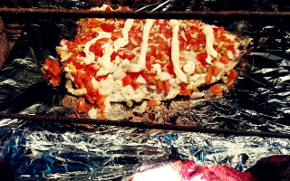

Venha descobrir as maravilhas de Itapoá e deixe-se encantar por essa joia do litoral catarinense !

Receitas
Peixe espalmado na grelha
Ingredientes:
- 1 tainha fresca (de preferência, do mercado municipal, espalmada e com ou sem cabeça, a gosto)
- Suco de limão
- Alho (picado ou em pasta)
- Papel alumínio
- Maionese
- Vegetais coloridos a gosto (por exemplo, tomate, cebola, pimentão, palmito, milho)
Instruções:
- Para começar, adquira uma tainha fresca de sua escolha. Recomendamos fazer a compra no mercado municipal, onde você pode solicitar que a tainha seja preparada espalmada, com escamas. A decisão de manter ou remover a cabeça fica a critério de sua preferência pessoal.
- Tempere a tainha com suco de limão e alho. Deixe-a descansar com esses temperos por 1 a 3 horas.
- Prepare a churrasqueira, colocando papel alumínio na grelha para manter os sucos e temperos do peixe. Isso também facilitará na hora de servir.
- Coloque o peixe na grelha da churrasqueira com a parte das escamas voltada para baixo. Cubra-o com papel alumínio e deixe assar por aproximadamente 20 minutos.
- Após esse tempo, passe maionese por cima do peixe e volte a cobri-lo com o papel alumínio.
- Quando começar a borbulhar, acrescente os vegetais coloridos picados por cima do peixe. Você pode escolher entre tomate, cebola, pimentão, palmito, milho ou outros de sua preferência. Quanto mais colorido, melhor!
- Cubra novamente com o papel alumínio e deixe cozinhar por mais 30 minutos.
- Retire o papel alumínio, passe mais um pouco de maionese por cima e aguarde por mais 20 minutos.
- Retire a grelha da churrasqueira e sirva diretamente nela mesma para seus convidados.
Aproveite sua Tainha Espalmada na Churrasqueira com Vegetais Coloridos!
Esta receita deliciosa vai surpreender seus convidados com sabores incríveis e uma apresentação impressionante. Bom apetite!
